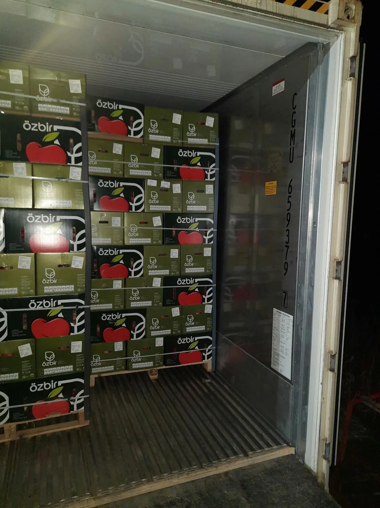
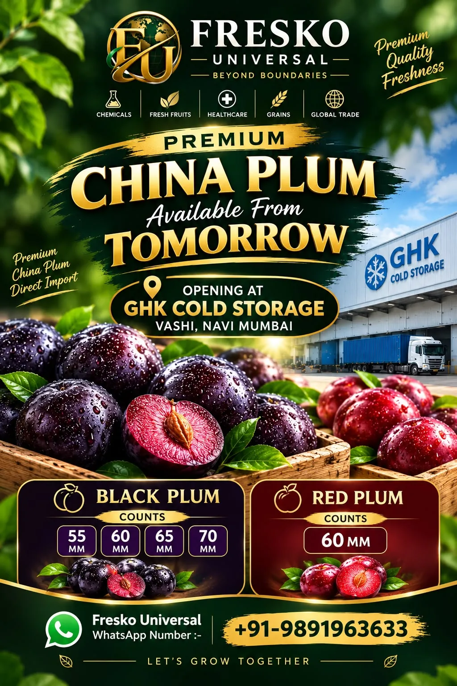
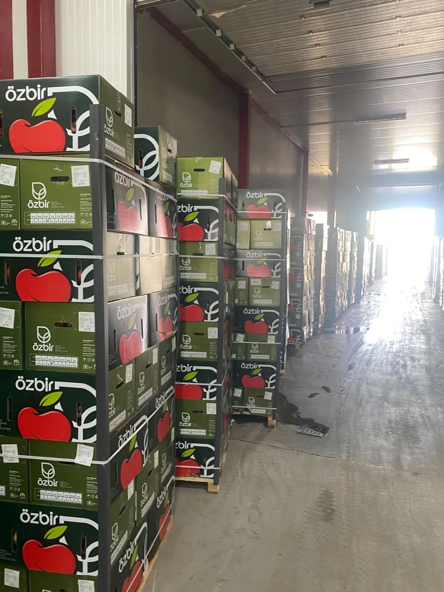
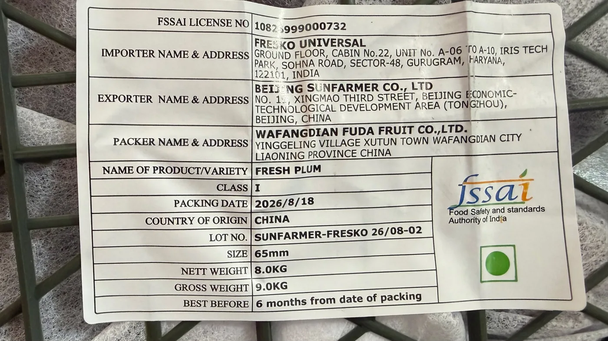
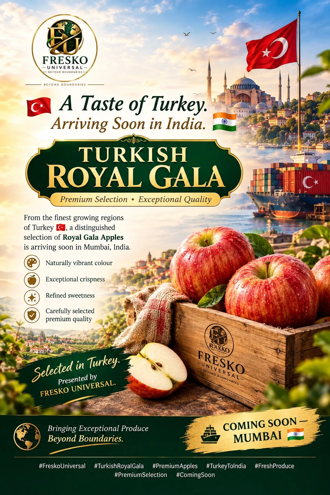

What overseas fruit exporters should ask before choosing an India partner
From route-to-market and QC to sales visibility and settlement: the questions that matter beyond a purchase order.
Fresko Universal connects international exporters with serious Indian demand—and helps Indian wholesalers, institutions and hospitality buyers source fresh produce through a disciplined, traceable operating process.

Different counterparties need different answers. We make the route clear from the first conversation.
Explore India market entry, importer coordination, shipment visibility and commercial execution.
Exporter desk →Discuss fresh imported produce, LOT availability, quality, commercial terms and dispatch.
Buyer desk →Structured procurement conversations for hospitality, catering, foodservice and corporate requirements.
Institutional supply →Cold stores, logistics, service providers and ecosystem partners can open a direct conversation.
Partner with us →

Fresh produce is time-sensitive. A good trade partner needs to know what arrived, what passed QC, what is available, what was sold, what moved and what remains—not reconstruct the truth later.
Not a black box. A practical sequence that gives every shipment a clearer commercial story.
Availability is shipment- and season-dependent. Ask us for current LOTs rather than relying on a static catalogue.

Handled with container, LOT, QC, sale and dispatch context for the Indian market.
Check current availability →
Talk to us about seasonal imported-fruit opportunities, specifications and buyer demand.
Discuss an export program →For wholesalers, institutions and foodservice buyers who want a supply conversation built around requirement, not catalogue clutter.
Send a requirement →Our insights are designed for buyers and exporters researching how fresh-produce trade into India actually works.
From route-to-market and QC to sales visibility and settlement: the questions that matter beyond a purchase order.
A practical explanation for buyers, traders and operations teams.
How to frame quality, frequency, pack, delivery and escalation requirements.
Exporter, wholesale buyer, institutional procurement team or trade partner: send the product, origin/destination, volume range and timing. We will take the conversation from there.